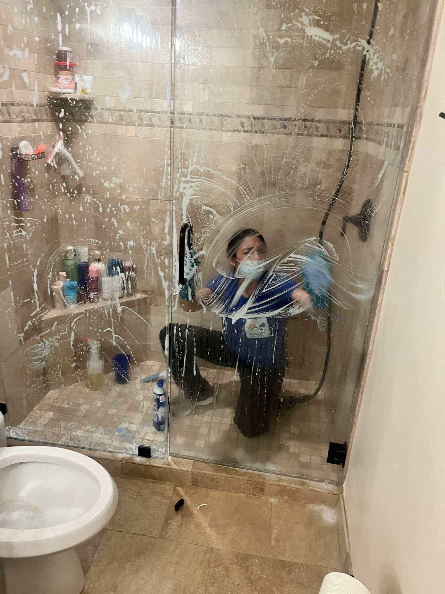

Service areas
Sun Ray Cleaning service area hubs across Summit County and Wasatch County.
Start with the closest county hub, then choose the city served that best matches the home, cabin, condo, or rental.

County hubs
Start with the right county hub.
Use the county pages for broader service-area context, then jump into a city page for local cleaning details and pricing.


Cities served
Choose the closest city served.
These city pages are the best starting point for house cleaning, Airbnb and VRBO turnovers, deep cleaning, recurring cleaning, and move cleaning.

Park City
House cleaning, vacation rental turnovers, second-home care, and detailed deep cleans.

Heber City
Recurring cleaning, move cleaning, deep cleaning, and family-home resets in the Heber Valley.

Midway
Home and cabin cleaning for Midway neighborhoods, second homes, seasonal stays, and guest visits.

Kamas
Rural-home cleaning, move cleaning, seasonal resets, and recurring care east of Park City.
More local pages
Smaller communities and neighborhood service areas.
Use these pages when the home is outside the main city hubs but still near Sun Ray Cleaning's Summit County and Wasatch County service area.
Cleaning services
Choose the cleaning service your home needs.
Use these service pages from any county or city hub when you need details for pricing, timing, and the right checklist.


Service area FAQs
Questions before you request a local cleaning quote.
What main service area hubs does Sun Ray Cleaning serve?
Can I book Airbnb or VRBO turnover cleaning in these service areas?
Do you offer recurring cleaning outside Park City?
How do I choose the right location page?
What details help Sun Ray quote a home cleaning visit?
Ready for local cleaning?
Get a quote for your home.
Share your city, neighborhood, home size, service type, timing, pets, and access details so Sun Ray can recommend the right cleaning plan.